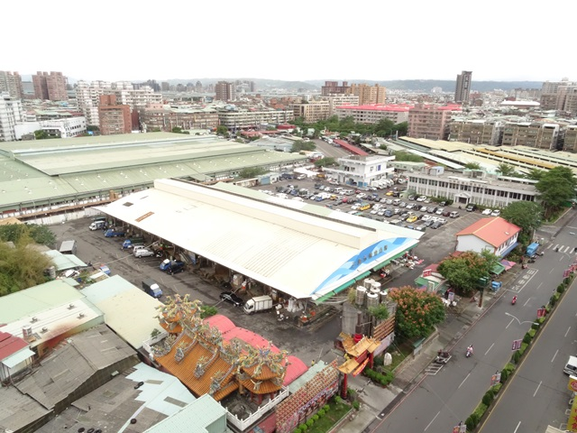

都更訊息
三重果菜市場更新迎新機 都市計畫內政部通過
【新北市訊】今104年5月19日新北市政府提報三重果菜市場更新都市計畫變更案經內政部都市計畫委員會審議通過，將批發市場用地變更為商業區，後續將以都市更新權利變換方式解決土地交叉持分問題，並以「現地重建、先建後拆」的方式安置區內現有攤商。
新北市政府城鄉發展局張溫德副局長表示，三重果菜市場每一筆土地均為公、私有交叉持分，權屬相當複雜，進而造成本區自民國65年來都市發展停滯，市府為促進都市土地有計畫之再開發利用，提昇三重區商業機能發展，依循法定程序提出配合都市更新的變更主要計畫案，已由內政部審議通過，後續盼藉由都市更新之開發方式，解決長年以來土地權屬紛爭。
新北市政府都市更新處王玉芬處長指出，目前三重果菜都市計畫內容確定後，後續將指定三重果菜市場及其周邊為都市更新地區，未來係以民間自辦都市更新事業計畫為原則，考量現況市場營運機能不中斷及高達1010攤的攤商安置，以採「現地重建、先建後拆」方式處理，將不會中斷現有營運機能，另為符合批發市場攤商皆以一樓平面使用的營運空間性質，已向內政部都市計畫委員會爭取一樓最大使用 面積並獲得同意，將有利於未來更新事業爭取攤商在低樓層安置。
未來三重果菜市場及其周邊整體的都市更新規劃願景，主要是藉由該案土地使用管制規定提供大面積開放空間，增加三重區都市綠地面積及休憩活動空間供市民使用；另透過回饋計畫市府可取得公益性樓地板面積，未來可作公益空間等多樣性使用，滿足在地需求。
新北市政府都市更新處洪宜萍科長補充，這個都市計畫變更案經內政部審議通過後，將擇期重新辦理公開展覽，讓三重地區民眾清楚瞭解計畫內容。
發言人：張溫德副局長 電話：0931-068213 、 1999 分機 7169
資料諮詢：更新處發展科洪宜萍科長 電話：02-29506206轉601
新聞聯絡：都市更新處秘書室游士蓓 電話：02-29506206轉202
< 返回列表地址：10580台北市南京東路四段150號2樓 電話：02-25780880#233 傳真：02-25786600
Copyright @ National Chinese Association for Urban Renewal
IE8.0 & Firefox 3.0 以上版本瀏覽器